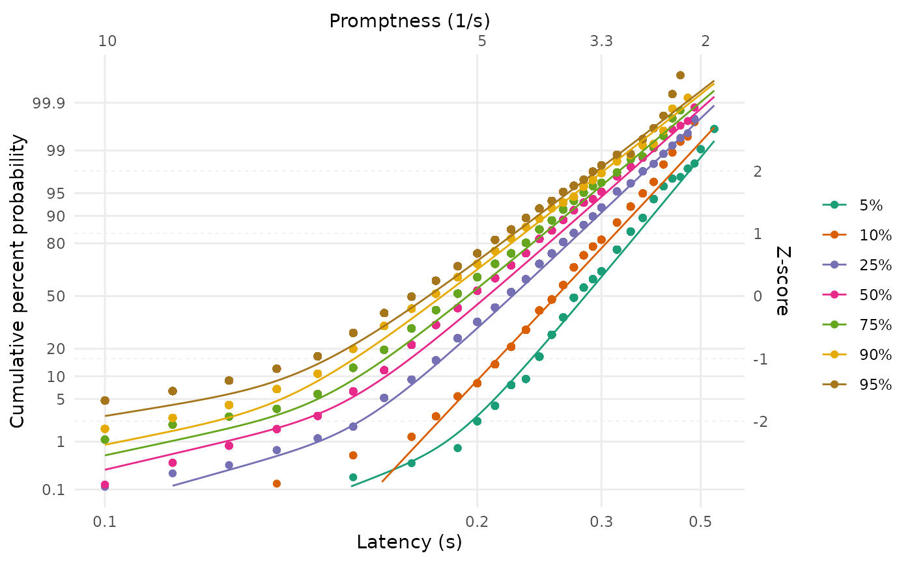

Analysis of 'Neural computation of log likelihood in control of saccadic eye movements'
Source:vignettes/articles/cw1995_analysis.Rmd
cw1995_analysis.RmdHere, we will walk through the analysis of some example data from the article “Neural computation of log likelihood in control of saccadic eye movements” by Carpenter and Williams (1995). We will be particularly interested in analysing the data from participant b, as shown in the figure below (their Figure 2b).
We will be looking at how we can use the LATERmodel package to load, fit, visualise, and evaluate data in the context of the LATER model of response times. If the LATERmodel package has not yet been installed, it can be installed by running the following within R:
# install.packages("devtools")
devtools::install_github("unimelbmdap/LATERmodel")Loading the raw data
A digitised version of the raw data from this study is included in
this package in the LATERmodel::carpenter_williams_1995
variable. This variable is a dataframe with rows corresponding to trials
and with columns named participant, condition,
and time. This is the recommended format for raw data to be
used with the LATERmodel package. The participant and
condition columns specify the identifiers for the
participant and condition, respectively, and the time
column specifies the measured response time (in milliseconds). The rows
corresponding to a particular unique combination of
participant and condition are referred to as a
dataset within this package.
We can look at the first few rows, using the head
function, to see the structure of the dataframe:
head(LATERmodel::carpenter_williams_1995)| participant | condition | time |
|---|---|---|
| a | p95 | 100 |
| a | p95 | 100 |
| a | p95 | 100 |
| a | p95 | 100 |
| a | p95 | 100 |
| a | p95 | 100 |
Because LATERmodel::carpenter_williams_1995 contains
trials for both participants a and b but we are only
interested in participant b here, we will extract only the
trials for participant b from this variable using the
subset function:
raw_data <- subset(x = LATERmodel::carpenter_williams_1995, participant == "b")Pre-processing the data
The data analysis functions within this LATERmodel
package require the raw data to first undergo pre-processing using the
LATERmodel::prepare_data function. We pass our
raw_data variable as the argument to the
raw_data parameter of LATERmodel::prepare_data
to perform such pre-processing:
data <- LATERmodel::prepare_data(raw_data = raw_data)Note that if the raw data had response times in units other than
milliseconds, we could have used the time_unit parameter to
LATERmodel::prepare_data to specify the units (see the
documentation for LATERmodel::prepare_data for
details).
We can again view the first few rows to inspect the output of the pre-processing:
head(data)
#> # A tibble: 6 × 4
#> # Groups: name [1]
#> time name promptness e_cdf
#> <dbl> <fct> <dbl> <dbl>
#> 1 0.15 b_p05 6.67 0.998
#> 2 0.17 b_p05 5.88 0.996
#> 3 0.19 b_p05 5.26 0.992
#> 4 0.19 b_p05 5.26 0.992
#> 5 0.2 b_p05 5 0.977
#> 6 0.2 b_p05 5 0.977As shown above, the data now has columns for name
(formed from the combination of the participant and
condition columns in the raw data), promptness
(the inverse of the time column, which is now specified in
seconds), and e_cdf (the evaluated empirical cumulative
distribution function for each dataset).
To make the condition names match those used in Carpenter and Williams (1995), we can recode them:
# make the names match C&W
data$name <- dplyr::recode_factor(
.x = data$name,
b_p05 = "5%",
b_p10 = "10%",
b_p25 = "25%",
b_p50 = "50%",
b_p75 = "75%",
b_p90 = "90%",
b_p95 = "95%"
)Visualising the observed data
We can use the LATERmodel::reciprobit_plot function to
visualise the observed data in ‘reciprobit’ space:
LATERmodel::reciprobit_plot(plot_data = data)This produces a plot in which the empirical cumulative distribution
function values for each of the datasets in data are shown
as individual points, with points from different datasets shown in
different colours (the colours can be set to user-specified values using
the LATERmodel::prepare_data function referred to earlier,
if desired). The lower horizontal axis shows the response time latency,
in seconds, increasing positively but non-linearly to the right. The
upper horizontal axis shows the reciprocal of the response time latency,
which is the promptness, decreasing linearly. The left vertical
axis shows the cumulative probability with non-linear (probit) spacing,
and the right vertical axis shows this with linear spacing
(z-scores).
Fitting the observed data
Single dataset
We will first consider how we can fit a LATER model to the
observations from a single dataset: the 95% condition. First, because
data contains trials from all the conditions for
participant b, we will extract only the relevant data:
data_p95 <- subset(x = data, name == "95%")We can use the LATERmodel::fit_data function to perform
the fitting. When fitting a single dataset, the most important decision
to make is whether the model should include an early component,
corresponding to very fast responses. The inclusion of this model
component is controlled by the with_early_component
parameter to LATERmodel::fit_data, and defaults to
FALSE. Here, we will fit the data including an early
component.
Note that an additional decision to make when fitting is the
criterion that is used to quantify the goodness of fit. This criterion
specifies the method of obtaining the value that the fitting algorithm
seeks to optimise by exploring the model’s parameter space. The
criterion is supplied to LATERmodel::fit_data via the
fit_criterion parameter. If no specific criterion is
specified, the default in LATERmodel is to optimise the likelihood
(fit criterion = "likelihood"). The alternative is to
optimise the Kolmogorov-Smirnov statistic, which can be specified via
fit_criterion = "ks".
fit_p95 <- LATERmodel::fit_data(
data = data_p95,
with_early_component = TRUE
)The returned variable, here named fit_p95, contains
information about the fitting parameters and the fitting result. The
best-fitting parameter values can be accessed in the
named_fit_params variable:
fit_p95$named_fit_params| a | sigma | sigma_e | mu | k | s | |
|---|---|---|---|---|---|---|
| 95% | 5.438844 | 1.091118 | 5.181305 | 5.438844 | 4.984654 | 0.9164915 |
To be able to interpret these model parameters, we will briefly
consider the components of a LATER model (see Carpenter and Noorani (2023) for detailed
information on the LATER model). The key assumption of a LATER model is
that the inverse of response time (promptness) can be modeled as a
Normal distribution. This distribution can either be parameterised via
location (\(\mu\)) and scale (\(\sigma\)) parameters or via intercept
(\(k\)) and scale (\(\sigma\)) parameters; we refer to the
latter parameterisation as the ‘intercept form’ (so named because the
\(k\) parameter describes the point in
z-score space where the response time latency approaches
infinity), and the need for these two different parameterisations will
become clearer in the “Multiple datasets fitted together” section below.
Because of the ambiguity around whether the Normal distribution is
parameterised as \(\left(\mu,
\sigma\right)\) or \(\left(k,
\sigma\right)\), we refer to the Normal distribution as having
the parameters \(\left(a,
\sigma\right)\) and allow \(a\)
to take the value of either μ or k depending on the desired
parameterisation. The best-fitting values of \(a\) and \(\sigma\) for this dataset are shown in the
table above (\(s\), also present in the
table, is simply \(1 / \sigma\)). The
table also shows the best-fitting \(\mu\) value, which is identical to the
value reported for \(a\) - this
indicates that the Normal distribution was fit with the parameterisation
where \(a = \mu\) (this is the default
in LATERmodel::fit_data). Because the location and
intercept parameters are related via \(\mu = k
\sigma\) and \(k = \mu /
\sigma\), we also report the value for \(k\) in the table above.
As mentioned previously, a LATER model can also include an early component in addition to the primary component described above. This early component is also assumed to be Normally distributed in promptness space, but with a fixed value of \(\mu\) (and \(k\)) of zero. The scale parameter of this component is labelled \(\sigma_e\). According to the LATER model, these early and primary components compete to produce the response time on a given trial - whichever has the highest promptness (lowest response time) is responsible for producing the response time. Because the early component has its location parameter set to a low value (0) in promptness space, it will be more likely to generate a lower value than the primary component. However, by having relatively high value of \(\sigma_e\), it has the capacity to occasionally produce high values of promptness; as such, it is able to describe unusually fast response times. The best-fitting value of \(\sigma_e\) is also reported in the table above.
To visually assess the reasonableness of the fitted parameters, we
can visualise the fit by passing the variable containing the parameters
to the LATERmodel::reciprobit_plot function:
LATERmodel::reciprobit_plot(
plot_data = data_p95,
fit_params = fit_p95$named_fit_params
)Multiple datasets fitted separately
If we want to fit multiple datasets but consider each dataset
separately in the fitting, we can use the
LATERmodel::individual_later_fit helper function. Here, we
will use it to fit all the conditions in the example data:
individual_named_fit_params <- LATERmodel::individual_later_fit(
df = data,
with_early_component = TRUE
)This function returns a dataframe that contains columns for each of
the entries in the named_fit_params component of the fit
information (along with additional columns relating to the fit):
individual_named_fit_params| name | a | sigma | sigma_e | mu | k | s | fit_criterion | stat | loglike | aic |
|---|---|---|---|---|---|---|---|---|---|---|
| 5% | 3.487331 | 0.6340165 | 2.012409 | 3.487331 | 5.500379 | 1.5772461 | likelihood | 523.6875 | -523.6875 | 1053.375 |
| 10% | 3.844035 | 0.6954855 | 2.419472 | 3.844035 | 5.527125 | 1.4378445 | likelihood | 811.0385 | -811.0385 | 1628.077 |
| 25% | 4.428079 | 0.8734767 | 2.940252 | 4.428079 | 5.069488 | 1.1448503 | likelihood | 1162.8834 | -1162.8834 | 2331.767 |
| 50% | 4.842958 | 0.9573524 | 3.249482 | 4.842958 | 5.058699 | 1.0445474 | likelihood | 2226.8256 | -2226.8256 | 4459.651 |
| 75% | 5.017000 | 0.9904528 | 3.975343 | 5.017000 | 5.065361 | 1.0096393 | likelihood | 4110.5947 | -4110.5947 | 8227.189 |
| 90% | 5.298177 | 1.0831038 | 4.274741 | 5.298177 | 4.891661 | 0.9232725 | likelihood | 10755.6638 | -10755.6638 | 21517.328 |
| 95% | 5.438844 | 1.0911176 | 5.181305 | 5.438844 | 4.984654 | 0.9164915 | likelihood | 17006.1877 | -17006.1877 | 34018.375 |
We can plot the result, as before.
LATERmodel::reciprobit_plot(
plot_data = data,
fit_params = individual_named_fit_params
)Note that, in contrast to the figure from Carpenter and Williams (1995) shown at the beginning of this document, our plots show the fits from the complete model rather than attempting to isolate the early and primary components. In the following explanation from Carpenter and Noorani (2023), p. 26, about these different plotting approaches, the approach in this package corresponds to the ‘alternative’ that they describe (and their ‘main’ and ‘maverick’ components correspond to our ‘primary’ and ‘early’ components):
“it is important to point out that although for clarity it can often be helpful to plot the asymptotes – in effect, the two separate components corresponding to the main and maverick components – the data points will not be expected to go through them: an alternative is to plot the combined theoretical distribution resulting from both components together”
Multiple datasets fitted together
We might be interested in situations in which multiple datasets have the same LATER model parameter value. We refer to such a scenario as a sharing of model parameters.
Note that it can take a long time for the command to fit a complex LATER model with multiple dataset and shared parameters to complete.
A ‘shift’ sharing arrangement
For example, multiple datasets might be considered to have the same scale of the primary component (\(\sigma\)) but vary in the location of the primary component (\(\mu\)) and the scale of the early component (\(\sigma_e\)). This particular arrangement is known as a shift.
To fit the datasets under such a sharing constraint, we use the
parameters to the LATERmodel::fit_data function that begin
with share_. To implement a shift, we would set
share_sigma = TRUE:
fit_shift <- LATERmodel::fit_data(
data = data,
with_early_component = TRUE,
share_sigma = TRUE
)After fitting a LATER model, it is good practice to check that the
parameter optimisation algorithm has not reported any issues in
producing parameter estimates. This information is contained in the
optim_result element within the value returned by
LATERmodel::fit_data; in particular, the
convergence value (where a nonzero value indicates
completion problems; see the
documentation for optim) and the message
value (which elaborates on any nonzero convergence
codes).
fit_shift$optim_result
#> $par
#> [1] 3.49705373 3.84909859 4.38148355 4.83312019 5.01223993 5.29605362
#> [7] 5.41771028 0.02516121 0.80648305 0.81793226 1.13157605 1.14455684
#> [13] 1.36970522 1.44636875 1.63074481
#>
#> $value
#> [1] 36811.27
#>
#> $counts
#> function gradient
#> 8082 NA
#>
#> $convergence
#> [1] 0
#>
#> $message
#> NULLWhen we look at the fitted parameter values, we can see that they
each have the same sigma (and \(s\), which is just \(1 / \sigma\)) - as expected by our request
that the \(\sigma\) parameter be shared
across datasets:
fit_shift$named_fit_params| a | sigma | sigma_e | mu | k | s | |
|---|---|---|---|---|---|---|
| 5% | 3.497054 | 1.02548 | 2.297093 | 3.497054 | 3.410161 | 0.9751527 |
| 10% | 3.849099 | 1.02548 | 2.323544 | 3.849099 | 3.753459 | 0.9751527 |
| 25% | 4.381484 | 1.02548 | 3.179542 | 4.381484 | 4.272615 | 0.9751527 |
| 50% | 4.833120 | 1.02548 | 3.221084 | 4.833120 | 4.713030 | 0.9751527 |
| 75% | 5.012240 | 1.02548 | 4.034436 | 5.012240 | 4.887699 | 0.9751527 |
| 90% | 5.296054 | 1.02548 | 4.355894 | 5.296054 | 5.164461 | 0.9751527 |
| 95% | 5.417710 | 1.02548 | 5.237823 | 5.417710 | 5.283095 | 0.9751527 |
We can once again visualise the fits:
LATERmodel::reciprobit_plot(
plot_data = data,
fit_params = fit_shift$named_fit_params
)A ‘swivel’ sharing arrangement
We can also consider other sharing arrangements. A particularly useful arrangement is known as a swivel, and occurs when multiple datasets share the intercept parameter (\(k\)) in the model. As described in the previous explanation of the model parameters (when fitting a single dataset), the intercept captures the point in z-score space where the response time latency approaches infinity. When sharing the intercept, multiple datasets have the flexibility to rotate or ‘swivel’ around this intercept point.
To be able to share the intercept, we need to tell
LATERmodel::fit_data that we would like the \(a\) parameter in the model to refer to
\(k\) rather than \(\mu\). We do that by setting the
intercept_form parameter to
LATERmodel::fit_data to TRUE. We also indicate
that we would like this parameter to be shared by setting the
share_a parameter to LATERmodel::fit_data to
TRUE.
fit_swivel <- LATERmodel::fit_data(
data = data,
with_early_component = TRUE,
intercept_form = TRUE,
share_a = TRUE
)Again, we can check the optimisation convergence:
fit_swivel$optim_result
#> $par
#> [1] 4.81687426 -0.32707086 -0.24910106 -0.05324513 0.04109460 0.04084630
#> [7] 0.09602266 0.12007757 0.68294802 1.25383251 1.08558235 1.05494820
#> [13] 1.30284334 1.34572977 1.51855887
#>
#> $value
#> [1] 36665.85
#>
#> $counts
#> function gradient
#> 4988 NA
#>
#> $convergence
#> [1] 0
#>
#> $message
#> NULLAnd we can inspect the fitted parameters:
fit_swivel$named_fit_params| a | sigma | sigma_e | mu | k | s | |
|---|---|---|---|---|---|---|
| 5% | 4.816874 | 0.7210327 | 1.427432 | 3.473124 | 4.816874 | 1.3868997 |
| 10% | 4.816874 | 0.7795012 | 2.731174 | 3.754759 | 4.816874 | 1.2828717 |
| 25% | 4.816874 | 0.9481476 | 2.807620 | 4.567108 | 4.816874 | 1.0546882 |
| 50% | 4.816874 | 1.0419507 | 2.992301 | 5.018945 | 4.816874 | 0.9597383 |
| 75% | 4.816874 | 1.0416920 | 3.833160 | 5.017699 | 4.816874 | 0.9599767 |
| 90% | 4.816874 | 1.1007840 | 4.228099 | 5.302338 | 4.816874 | 0.9084434 |
| 95% | 4.816874 | 1.1275843 | 5.148145 | 5.431432 | 4.816874 | 0.8868516 |
We can also again plot the fits. Note how the fits are constrained such that they would each meet at a common point on the vertical axis if extrapolated to an infinite latency - this is the consequence of sharing the intercept parameter in the model.
LATERmodel::reciprobit_plot(
plot_data = data,
fit_params = fit_swivel$named_fit_params
)
Comparing ‘shift’ and ‘swivel’ fits
We have seen how we can implement different sharing arrangements when
fitting multiple datasets. To quantify and compare how well the
different sharing arrangements fit the data, we can use the
LATERmodel::compare_fits function. This function accepts a
named list of variables returned from LATERmodel::fit_data,
so we will first construct this variable using the fits for ‘shift’ and
‘swivel’:
fits <- list(shift = fit_shift, swivel = fit_swivel)We then pass this variable as the argument to the fits
parameter in the LATERmodel::compare_fits function:
LATERmodel::compare_fits(fits = fits)| aic | preferred_rel_fit_delta_aic | preferred_rel_fit_evidence_ratio | preferred | |
|---|---|---|---|---|
| swivel | 73361.69 | 0.0000 | 1.000000e+00 | TRUE |
| shift | 73652.54 | -290.8488 | 1.435558e+63 | FALSE |
The output from this function contains a row for each of the provided
fit results, ordered such that the first row contains the ‘best’
(‘preferred’) fit. This assessment of which fit is ‘best’ is based on
the relative Akaike Information Criterion (AIC) values for the fits,
where lower AIC values are interpreted as indicating a superior fit in
comparison to higher AIC values. The aic column in the
table reports these AIC values, and the
preferred_rel_fit_delta_aic reports the difference in AIC
values between the preferred fit and the AIC value for the fit in the
relevant row. In this example, the ‘swivel’ fit is the preferred fit
(also indicated in the preferred column) because the
‘swivel’ fit has an AIC that is lower than the AIC for the ‘shift’ fit.
Finally, this comparison is also reported as an ‘evidence ratio’ in the
preferred_rel_fit_evidence_ratio column. As described in
Motulsky and Christopoulos (2004), this
evidence ratio “tells you the relative likelihood, given your
experimental design, of the two models being correct” (p. 147). Here,
the evidence ratio reported in the ‘shift’ row is overwhelmingly high,
which indicates that the preferred fit (the ‘swivel’) is much more
likely to be the ‘correct’ fit than the ‘shift’ (noting that the
evidence ratio is calculated as the ratio of the preferred fit to the
fit reported in the row).
Summary
In this walkthrough, we have seen how we can use this package to
conduct an analysis of response time data using the LATER model. First,
we represented the raw data as a data table having columns for
name, condition, and time and
having rows corresponding to single trials. We then used the
LATERmodel::prepare_data function to convert this raw data
into a format suitable for subsequent analysis. We used the
LATERmodel::fit_data function to fit the parameters of a
LATER model to such data; either for a single dataset, multiple datasets
considered separately, or multiple datasets with sharing of LATER model
parameters. We saw how we could use the
LATERmodel::reciprobit_plot to visualise both the observed
data and model fits in the ‘reciprobit’ space used in the LATER model.
Finally, we used the LATERmodel::compare_fits function to
compare the goodness-of-fit of multiple fits to data.